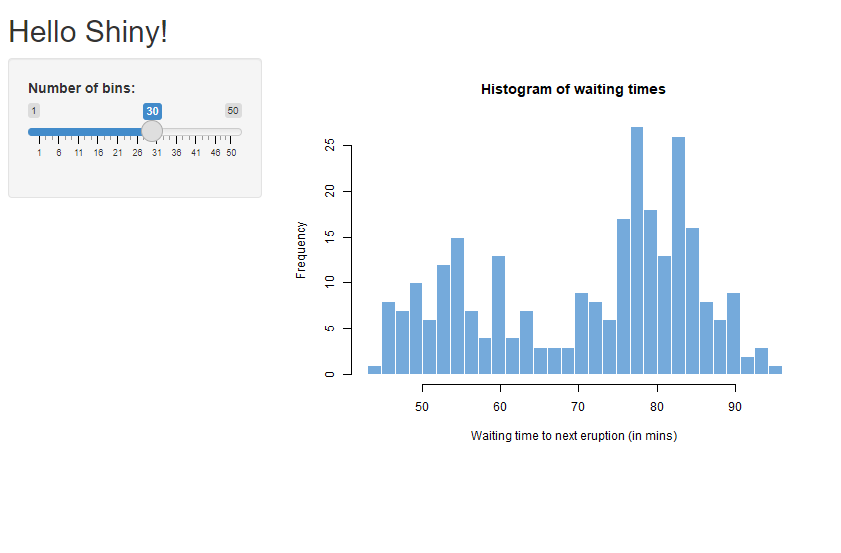

library(shiny)
# Define UI for app that draws a histogram ----
ui <- fluidPage(
# App title ----
titlePanel("Hello Shiny!"),
# Sidebar layout with input and output definitions ----
sidebarLayout(
# Sidebar panel for inputs ----
sidebarPanel(
# Input: Slider for the number of bins ----
sliderInput(inputId = "bins",
label = "Number of bins:",
min = 1,
max = 50,
value = 30)
),
# Main panel for displaying outputs ----
mainPanel(
# Output: Histogram ----
plotOutput(outputId = "distPlot")
)
)
)
# Define server logic required to draw a histogram ----
server <- function(input, output, session) {
# Histogram of the Old Faithful Geyser Data ----
# with requested number of bins
# This expression that generates a histogram is wrapped in a call
# to renderPlot to indicate that:
#
# 1. It is "reactive" and therefore should be automatically
# re-executed when inputs (input$bins) change
# 2. Its output type is a plot
output$distPlot <- renderPlot({
x <- faithful$waiting
bins <- seq(min(x), max(x), length.out = input$bins + 1)
hist(x, breaks = bins, col = "#75AADB", border = "white",
xlab = "Waiting time to next eruption (in mins)",
main = "Histogram of waiting times")
})
}
shinyApp(ui, server)2 Shiny Background
If you’re reading this, chances are that you already know what shiny is. You’ve probably built a few shiny apps locally, maybe you’ve deployed some to shinyapps.io or other platforms, and now you’re curious about how to deploy your app to GCP.
But, just so we’re all on the same page, this chapter is going to give a criminally brief and terribly incomplete overview of what shiny is. If you’re looking to learn more about developing shiny apps, there are lots of great resources out there, and RStudio’s shiny site is probably the best place to start.
2.1 What Is Shiny?
Shiny is a framework through which R users can build interactive web apps. Shiny apps can be many things, but they’re often dashboards or some other style of tool for interacting with data and/or statistical models. When describing them, I’m mostly going to assume you’re making a dashboard. One of the nice features of shiny is that you can build these apps purely with R code – you don’t need to know HTML, CSS, Javascript, or any other backend language like Go or Rust or Python. Knowing some HTML/CSS/Javascript can be helpful if you want to extend your shiny app, but they’re not necessary.
Another nice feature of shiny is that, since it’s built using R code, it interacts nicely with other R code. This means we can do things like work with dataframes and model objects easily without having to worry about translating these things into objects that other languages can understand. It also means we can prototype apps fairly quickly.
2.2 Components of a Shiny App
At a very broad level, shiny apps consist of two components: a user interface (UI) and a server (there’s no acronym for server, just FYI).
2.2.1 UI
Like its name suggests, the UI is how users interact (or interface) with your application. It usually consists of input devices (dropdowns, sliders, open text, etc) and output displays (e.g. tables, graphs, text) arranged in a way that’s hopefully appealing and navigable. The inputs of the UI are (always? almost always?) parameters that get passed to functions in the server, and the outputs in the UI are the results of functions executed by the server.
2.2.2 Server
The server is where the logic of your code gets executed. Its job is to wrap together several functions that take inputs from the UI (as well as inputs not defined in the UI), pass them into functions, and then pass the results of these functions back to the UI to display as outputs. Moreso than the UI, the server is reminiscent of “typical” R code. The server is where you’ll predict from models, create plots, query databases, etc.
2.3 Old Faithful
If you’ve been around shiny for any amount of time, you’ve probably seen the Old Faithful shiny app, which is basically the “hello world” of shiny. Here’s the code for it (cribbed from RStudio):
And here’s a screenshot of the app it creates:

2.4 Wrapping Up
This brief chapter is meant to give a way-too-short description of shiny. My assumption is that if you’re reading this book, you likely know all of this already. And if this information was new to you, you may want to learn more about shiny before proceeding.